Open lion’s mane jellyfish · Previous compass-jelly study · Anthozoa and box-jelly study
Version 0.6.46 · October 27, 2026, Bangkok · one existing species, zero additions. This individual correction replaces the compact ribbed oral sack and long parallel marginal strands with distinct folded exterior regions and more varied attached tentacles.
Bell thickness/clefts, oral lip folds and curtain transitions, gonadal exteriors, numerical pigment and tentacle curves/counts remain selected and partly stylized. Closed pieces overlap without fused histology or resolved food grooves, muscle, canals, rhopalia or gonad interiors. Tentacle self-contact, discharge, feeding, full swimming, pressure, fluid transport, measured optics and physiology are absent. The current comparison uses software compatibility rendering only: fine threads can rasterize as dots and tissue scattering, refraction and final WebGL optics are not established. Numerical folds and the selected colour fields remain visible. This is an authored educational reconstruction, not a photorealistic specimen, independent biological validation or an accuracy percentage.
The actual World List of Scyphozoa record 135301, retrieved through the official WoRMS REST service, confirms the accepted species-level name Cyanea capillata (Linnaeus, 1758), family Cyaneidae. Existing GBIF identity, photograph association and occurrence snapshot remain unchanged. This is not an independent redetermination of a photographed specimen or historical worldwide occurrences.
The actual Naturalis adult account supports a saucer bell with unequal clefts, inward subumbrellar tentacle rows, four furrowed membranous oral arms joined by a shorter folded curtain, and separate hanging gonadal folds. The Marine Biological Association account supports eight dense tentacle groups, a thicker bell thinning near its edge and variable yellow, brown or reddish tissue. Their oral-arm length descriptions differ: radius versus diameter. We therefore choose an illustrative posture and do not impose a universal length ratio. Closed exterior pieces overlap; they are not fused histology, open food grooves, internal canals or gonad interiors.
The Villanueva and Priya 2014 primary paper was read as official Europe PMC full XML. Selected methods and the complete publisher Figure 2A–D were inspected. It analyses one Norway Atlantic animal from a 30-second OceanFootage library recording; size is unknown, with roughly 50 cm inferred from a diver. Camera orientation and drift correction are essential. The source video itself was not acquired or viewed. The figure remains private because separate footage-image rights are unresolved. The new eight-second study is independently authored: no paper trajectories, pulse rate, pressure, forces or swimming performance are fitted.
The complete Tim Nicholson Isle of Man photograph on the MarLIN account was privately inspected. It shows an irregular reddish folded oral region, a translucent lobed bell and tangled fine pale strands. It has separate copyright and is linked only. Neither underwater illumination nor the smaller retained Swedish animal supplies calibrated intrinsic colour or optical constants.
Side/front/top, local motion and anatomy views show a compact ribbed central mass, weak bell clefts, long parallel strands starting from an exposed flat margin and repetitive warm colouring. These captures come from the actual previous public viewer.
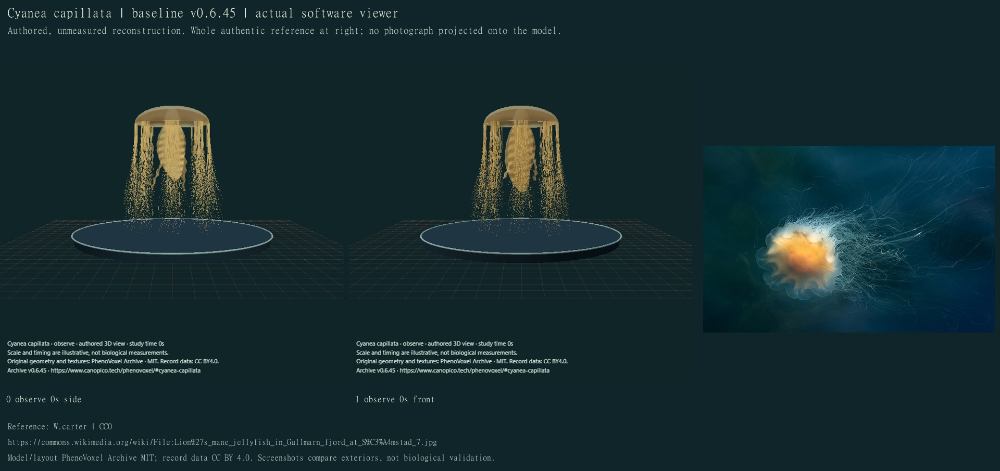
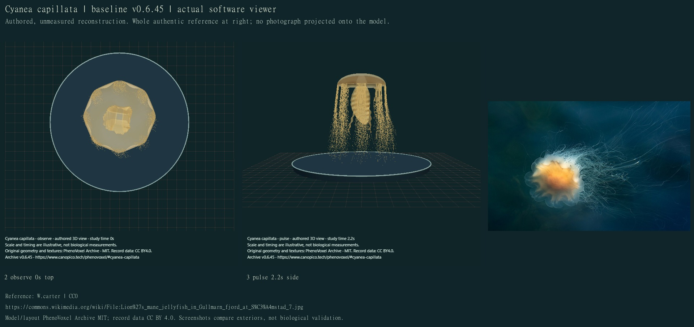
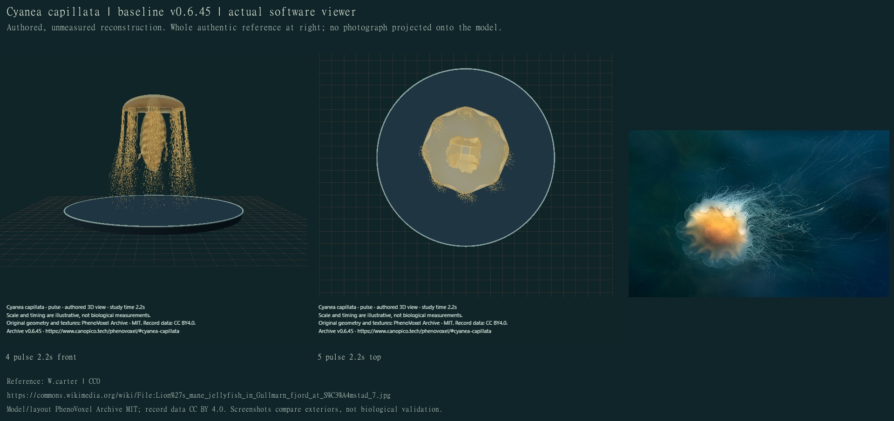
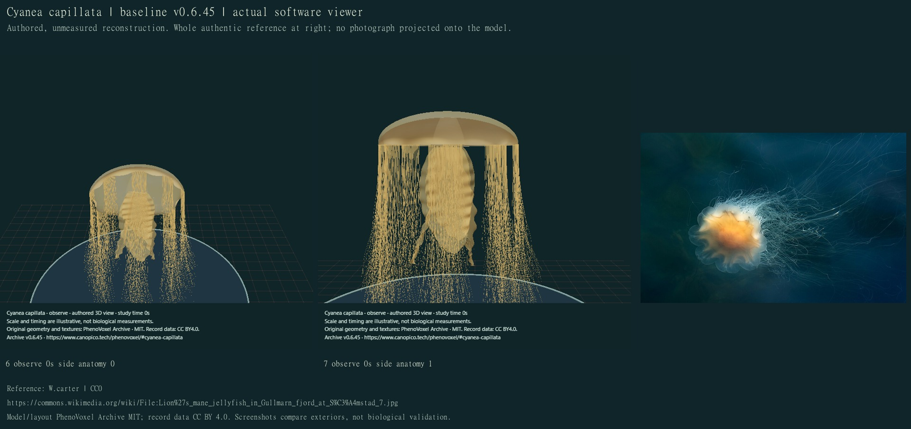
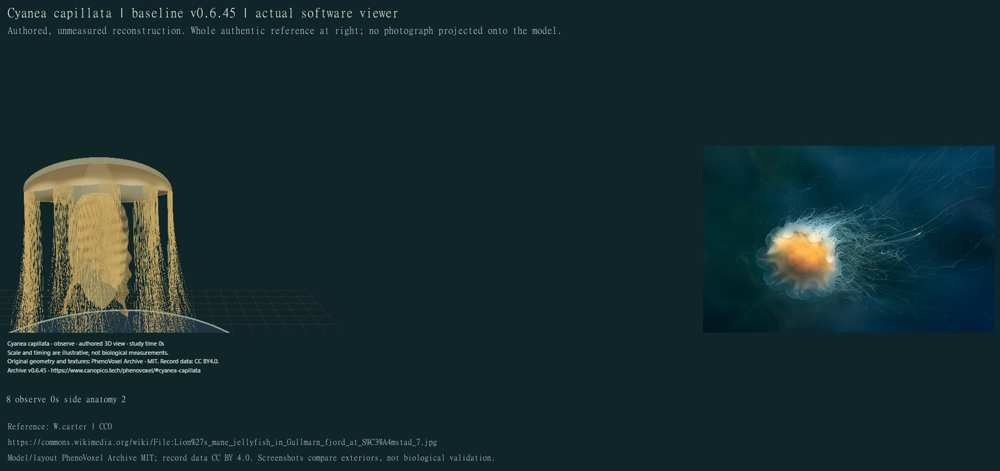
All 24 final compiled main-viewer states were individually inspected on 12 credited comparison sheets. Study seconds and display size are illustrative. Default camera views, several local study times, anatomical foci, exact neutral recovery and completion hold were compared.
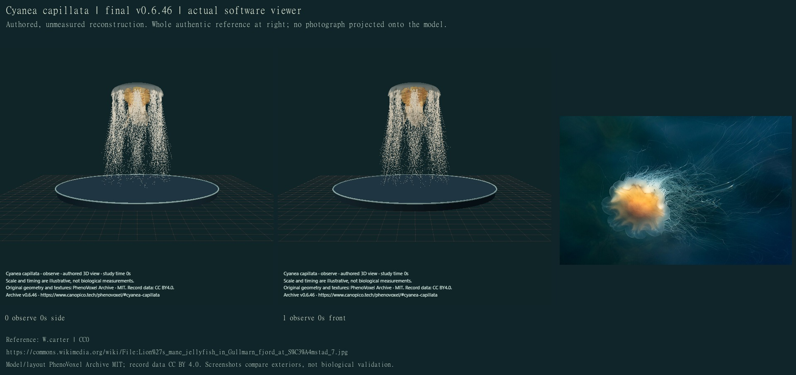
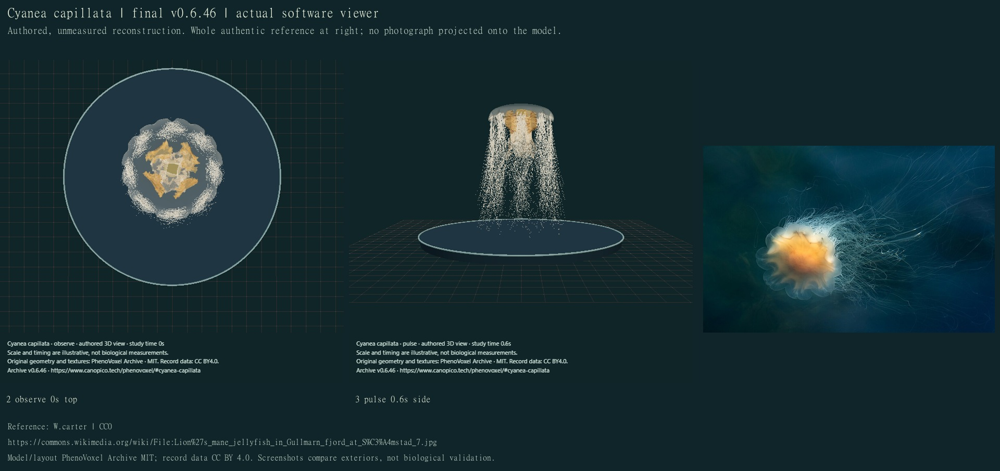
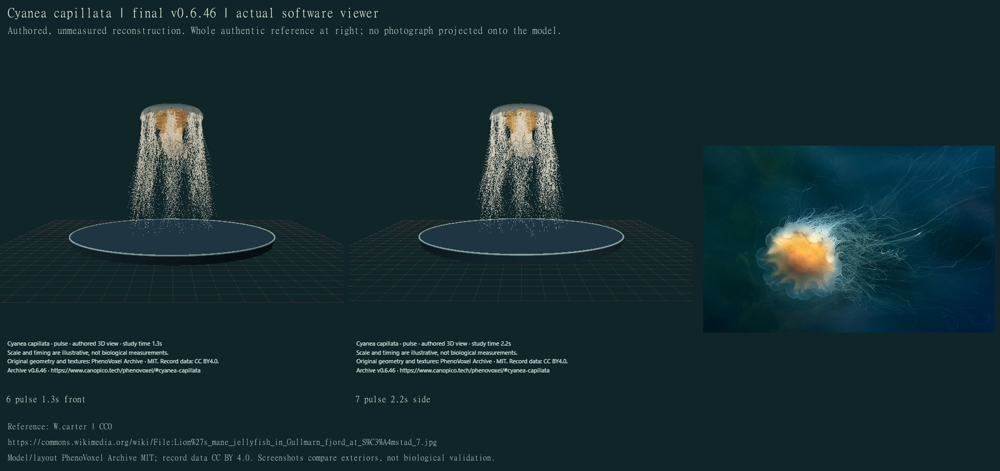
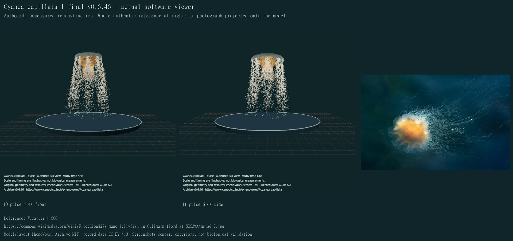
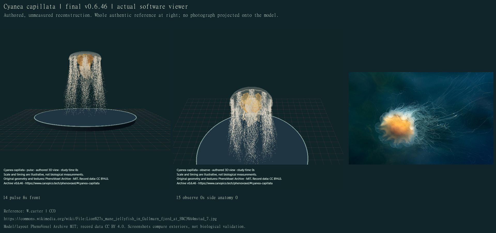
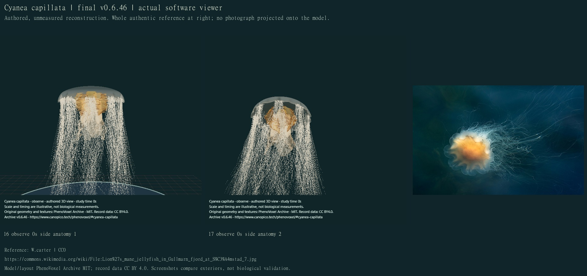
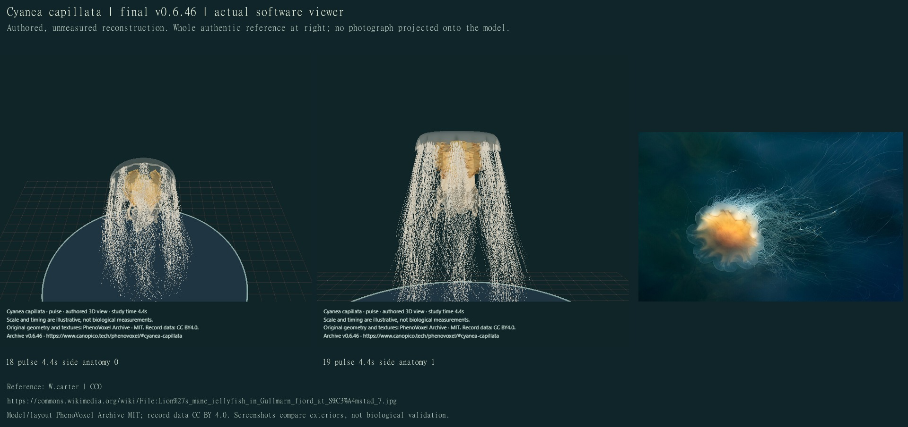
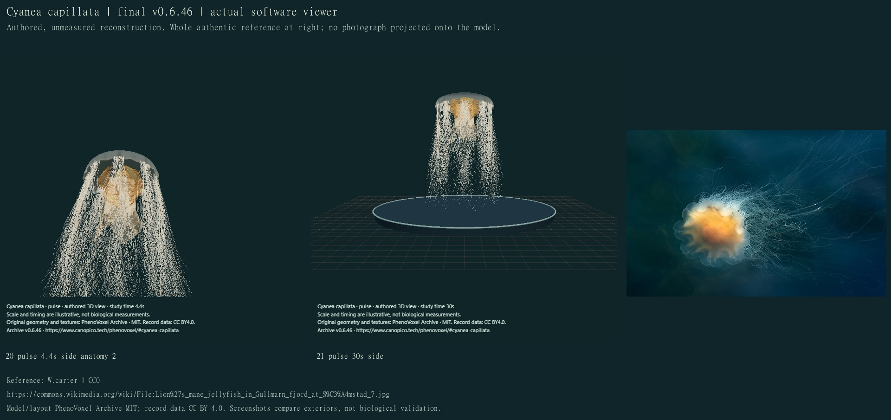
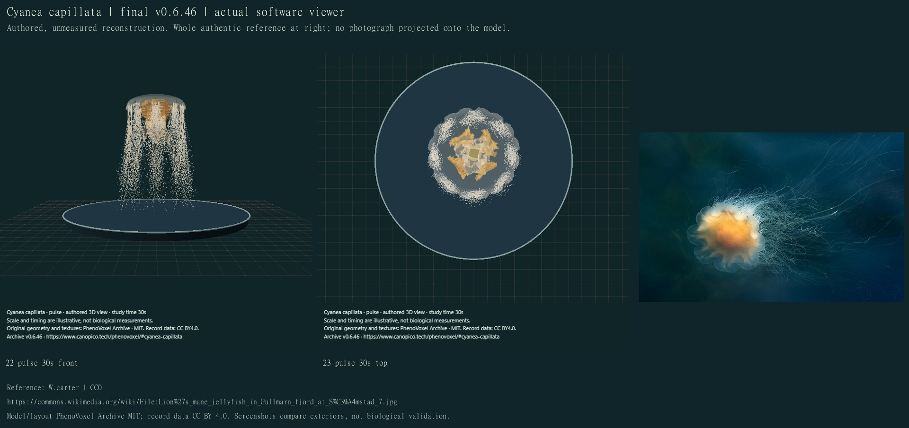
| Region | Correction | Still unresolved |
|---|---|---|
| Bell | Selected smooth thick saucer wall, alternating deeper/shallow clefts, thinner lappets and original attached pale/gold pigment. | Unmeasured thickness, cleft profile, selected pattern and optical constants; internal pouches, muscles and rhopalia absent. |
| Oral and gonadal regions | Four broader furrowed membranous arms, shorter connecting folded curtain and separate interradial hanging gonadal folds. | Partly regular wrinkles and simplified overlapping unions. No fused histology, open food-groove lumen, internal gonads or prey transfer. |
| Tentacles | 560 selected tapered curved exteriors in eight groups, four inward rows per group, varied longitudinal extents and earlier lateral curvature. | Selected counts, curves and thickness; self-contact, nematocysts, discharge and fluid/contact forces absent. Fine strands can look dotted in software rendering. |
| Movement | Finite eight-second regional bell contraction/recovery plus delayed tissue response on unchanged geometry/material/pigment, neutral start/end and held completion. | Authored timing and amplitudes. No root travel, full swimming, water transport, muscle controller, feeding or physiology. |
Earlier private drafts were revised for rectangular gonadal panels, repeated comb-like ruffles and long parallel roots. Finer attached strands and curved fold profiles improve differentiation, but this remains a partly stylized numerical reconstruction. All 323 full local software checks passed. These tests cover retained identity/photo bytes, closed noncollapsed surfaces, actual bell-triangle attachment, finite deformation, unchanged materials/colour, stable root and exact neutral recovery. They do not validate biological accuracy, optics or complete behaviour.
Machine-readable findings, source scopes and capture ledger · Movement and development implementation inventory. Frozen published CI and exact custom-domain rendering verification are recorded separately in the publication proof. Next: Pelagia noctiluca, then the saved jellyfish queue.